1. 系统与任务
GPT-6-Astra 参与机器人表演运行期间的反馈决策。机器人执行一段运动后，系统从当前 MuJoCo 状态生成第一视角 RGB 图像，并读取关节位置、机身速度、重力方向、夹爪位移及手足接触力。当前 Codex 会话中的 GPT 接收这些新观测，结合完整表演任务和此前执行结果，判断是否继续当前阶段程序提出的动作、执行多长时间以及何时再次观察。有效决策到达后，仿真继续推进，形成反复更新的观测—决策—执行闭环。
该闭环贯穿登台、拾架、搬运、放架、俯卧撑和跳跃等阶段。本轮连续运行保存了 51 组观测编号对应的 GPT 决策，包含对新图像与本体状态的判断，以及实际采用的执行窗口。任务顺序由阶段程序辅助，导航参考由 SONIC planner 生成，SONIC 跟踪策略执行腿部控制，IK、支撑控制与 PD 完成操作动作和电机驱动。
第一视角和本体状态取自每个检查点的当前物理状态。GPT 决策期间暂停仿真，收到有效动作后继续运动；下一次检查点再提供新的反馈。因此，本系统实现的是事件触发的在线暂停步进控制，尚未验证物理持续运动时的墙钟实时推理。
- ① 当前观测机器人第一视角
本体状态与手足接触 - ② GPT 在线决策执行或终止
执行窗口与可用参数 - ③ 运动控制SONIC / IK
接触支撑与 PD - ④ MuJoCo 推进电机驱动与物理积分
产生新的机器人状态
场景采用 Unitree G1，包含 29 个身体转动关节、2 个滑台夹爪以及可自由运动的两只支架。模型具有 52 维广义位置、49 维广义速度和 31 维执行器输入；身体关节使用力矩驱动，夹爪使用直线驱动力。
- 登台与搬运：机器人登上舞台，走到支架前，停稳后弯腰握架并起身，再原地转向舞台中心并搬运。
- 放置与展示：在中心停下，将支架放到面前，松手并起身，完成第一次秀肌肉后恢复自然站立。
- 支架俯卧撑：下蹲并前伸双臂握架，逐腿后伸并稳定支撑，曲臂下降、推起，逐腿收回，松手并起身。
- 跳跃与谢幕：双臂后摆并屈膝，前摆双臂并起跳，落地站稳后完成最终秀肌肉。
2. GPT 运行时闭环
完整任务要求保留在 Codex 会话上下文中。仿真进程保持机器人、控制器和物理状态常驻，在检查点通过文件发布观测，Codex 使用工具读取图像与状态并提交决策。每一轮按以下顺序执行：
- 运动执行与触发。已有控制器根据上一次有效决策推进运动。在阶段转换检查点或指定窗口到期时，程序进入观测流程；底层动力学失败会单独触发终止。
- 获取当前第一视角和本体状态。程序复制当前关节位置与速度到渲染场景，生成相机图像，同时读取该检查点的本体与接触摘要。图像、仿真时间和状态使用同一观测编号保存。
- 将新观测交给 GPT。仿真发布 observation_NNN.json 和 ego_NNN.png，并等待动作。当前 Codex 会话读取 JSON 与对应图像；GPT 综合任务要求、视觉、接触状态、身体稳定性及上一轮决策作出判断。
- 生成下一段执行决策。GPT 输出当前观测编号、是否执行、执行窗口、速度比例、控制后端和判断理由。窗口决定下一次反馈的最晚检查时刻，阶段转换可提前触发反馈。
- 校验与执行。程序检查编号、参数范围和阶段允许的后端。有效动作允许继续物理推进；明确拒绝执行、无效动作或等待超时会终止本次运行。未收到决策时不推进物理时间。
- 反馈更新。运动产生的新状态用于下一轮读图与判断。观测、决策、控制输入和实际轨迹均分别保存，可按观测编号追溯。
本轮由 Codex 会话通过工具完成逐次文件交互，未调用独立模型 API 服务。校准模式会由程序生成固定参数并标记为 calibration；本页展示的 codex_sonic_revision_005 使用 codex 来源记录。
2.1 GPT 接收的观测
虚拟相机固定于 torso_link，局部位置为前向 0.095 m、上方 0.40 m，朝前下倾 25°，垂直视场为 90°。原始 RGB 图像分辨率为 640 × 360。相机未经真实传感器标定。
- 图像与观测编号、全局仿真时刻及阶段程序提出的下一动作。
- 29 个身体关节的位置、机身坐标系下的重力方向和线速度。
- 双手、双脚的接触力摘要，以及两个夹爪的位移。
- 上一次决策及当前阶段允许使用的控制后端。
| 观测量 | 维度 | 用于运行时判断 |
|---|---|---|
| 第一视角 RGB | 360 × 640 × 3 | 支架与台面的相对位置、手与杆的关系，以及运动前后视野变化。 |
| 身体关节位置 | 29 个角度 | 辅助确认站立、下蹲、伸腿与定姿状态。 |
| 机身速度与重力方向 | 各 3 维 | 辅助判断身体运动、倾斜与稳定程度。 |
| 手足接触力摘要 | 4 个数值，依次为左手、右手、左脚、右脚 | 判断手部承重、单腿离地及重新落脚。 |
| 夹爪位移 | 2 个数值 | 辅助确认闭合与释放状态。 |
| 任务与阶段信息 | 文本及结构化字段 | 结合完整任务、建议阶段、上一决策与可用控制后端确定执行意图。 |
观测 JSON 不直接提供舞台或支架的世界坐标。底层 IK 使用仿真几何信息，开发会话也可接触运行日志中的世界坐标，因此本实验不构成特权信息隔离的纯视觉盲测。
2.2 GPT 输出与控制作用
| 字段 | 含义与约束 |
|---|---|
| observation_id | 必须对应当前观测编号，过期动作被拒绝。 |
| execute | 批准执行或显式终止；终止不能记作任务完成。 |
| horizon_s | 0.1–8 s 的仿真执行窗口；阶段转换可以提前触发下一观测。 |
| speed_scale | 0.8–1.2 的行走速度比例；波比跳接触动作固定为 1，保持内部时序。 |
| controller | 选择当前阶段可用的控制后端；本轮 6 次决策选择 SONIC，其余决策选择 legacy。 |
| reason | 保存依据当前图像与本体状态作出的执行判断。 |
动作先写入临时文件，再原子重命名，避免仿真读取不完整数据。缺失决策、超时、无效参数或动力学失败均显式记录并终止。本轮 GPT 共提交 51 次决策，各次批准的最长执行窗口均为 8 s，阶段转换可提前触发新的观测。
执行窗口控制两次 GPT 观测之间允许推进的仿真时长，窗口缩短会提高观察密度。execute 为真时继续建议阶段，为假时终止整次运行；该接口未提供任意阶段重排或替换动作路径。窗口到期发生在下一个控制检查点，时间精度受底层控制步长限制。
本轮实际使用情况：51 次决策均批准执行，速度比例均为 1.0，其中 6 次选择 SONIC，45 次选择 legacy。GPT 根据新观测选择控制后端和观察窗口；主动终止及速度比例调整未在本轮触发。阶段顺序、导航目标与接触动作参考由任务程序提供。
2.3 实例：视觉与本体反馈驱动的在线决策
以下十二个实例取自本轮真实 Codex 决策。图像、接触力与速度对应同一检查点，判断文字直接读取决策日志。8 s 表示允许推进的最长仿真时间，阶段转换可以提前触发下一次观察。
接近支架：小步精调与足端避让
观测 3 · 13.472 s · approach_fine
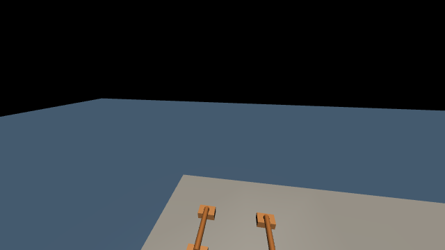
左、右手接触力：0.0 / 0.0 N；左、右足接触力：159.2 / 184.9 N。机身坐标系线速度：(0.0169, -0.0137, -0.0010) m/s。
GPT 记录的判断：支架已在近处，双脚承重且速度接近零；执行前进0.08m/s、横移0.04m/s上限的小步接近，到位后停稳。
下发动作：继续执行，窗口 8 s，速度比例 1.0，后端 legacy。
拾架：确认夹持后起身
观测 9 · 36.792 s · pickup
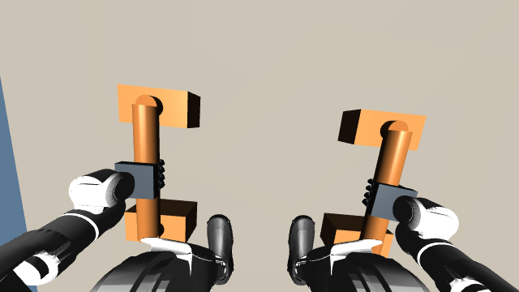
左、右手接触力：15.6 / 22.0 N；左、右足接触力：174.1 / 170.4 N。机身坐标系线速度：(0.0000, 0.0000, 0.0001) m/s。
GPT 记录的判断：双手已闭合环抱木杆，手部接触力约16/22N且身体静止；保持夹持，逐步起身提架。
下发动作：继续执行，窗口 8 s，速度比例 1.0，后端 legacy。
持架转向：启用 SONIC
观测 11 · 44.794 s · turn_center
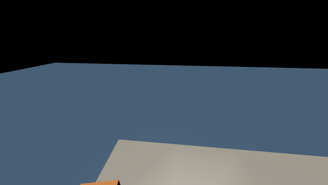
左、右手接触力：20.0 / 18.7 N；左、右足接触力：188.5 / 167.8 N。机身坐标系线速度：(-0.0046, 0.0089, 0.0012) m/s。
GPT 记录的判断：身体竖直、两手夹持接触持续，膝角稳定；切换SONIC转向舞台中心，同时保持上肢夹持参考。
下发动作：继续执行，窗口 8 s，速度比例 1.0，后端 sonic。
负重行走：朝舞台中心移动
观测 12 · 46.104 s · carry_center
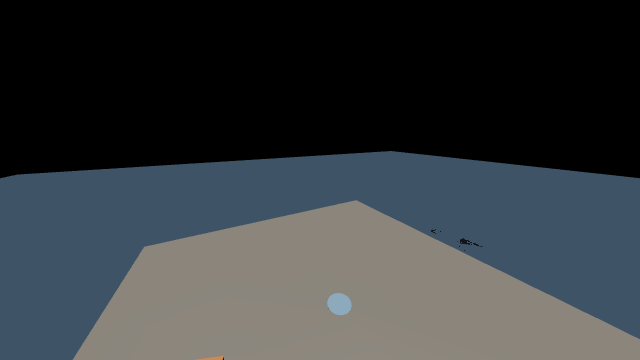
左、右手接触力：23.4 / 19.1 N；左、右足接触力：90.2 / 252.1 N。机身坐标系线速度：(0.0019, -0.1012, -0.0126) m/s。
GPT 记录的判断：中心标记已进入前方视野，双手夹持持续；采用SONIC低速负重行走接近中心。
下发动作：继续执行，窗口 8 s，速度比例 1.0，后端 sonic。
中心转向：保持 SONIC 腿部控制
观测 15 · 57.202 s · turn_front
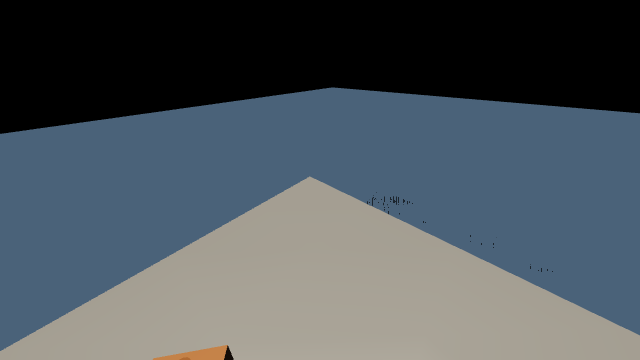
左、右手接触力：21.4 / 18.1 N；左、右足接触力：185.5 / 171.5 N。机身坐标系线速度：(-0.0190, 0.0460, -0.0005) m/s。
GPT 记录的判断：已在中心附近，双脚185/171N承重、双手夹持稳定；采用经交接观测刷新的SONIC转向展示方向，随后保留实测落脚位置。
下发动作：继续执行，窗口 8 s，速度比例 1.0，后端 sonic。
放架：等待底座稳定接触
观测 18 · 72.774 s · ground_settle
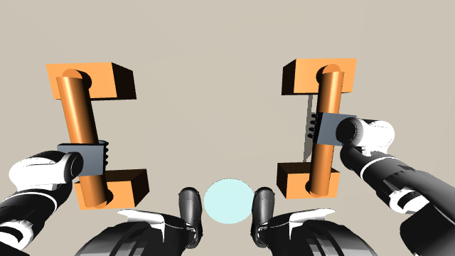
左、右手接触力：17.0 / 16.4 N；左、右足接触力：175.4 / 172.5 N。机身坐标系线速度：(0.0003, 0.0001, -0.0000) m/s。
GPT 记录的判断：两支架已放到中心标记两侧，身体低位静止、双脚承重；保持夹持，以微小高度与倾角反馈建立四底座稳定接触后再松手。
下发动作：继续执行，窗口 8 s，速度比例 1.0，后端 legacy。
逐腿后伸：等待右脚落地
观测 35 · 122.872 s · right_land
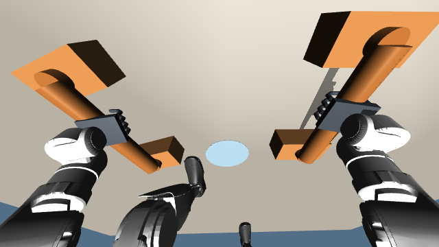
左、右手接触力：122.1 / 132.8 N；左、右足接触力：0.0 / 0.0 N。机身坐标系线速度：(0.2129, 0.0048, -0.1140) m/s。
GPT 记录的判断：右膝已接近伸直，两手正在承重，当前足部接触尚未恢复；先执行落脚与稳定门控，确认支撑后再移动另一腿。
下发动作：继续执行，窗口 8 s，速度比例 1.0，后端 legacy。
俯卧撑：允许连续 IK 屈臂下降
观测 38 · 125.328 s · pushup_lower
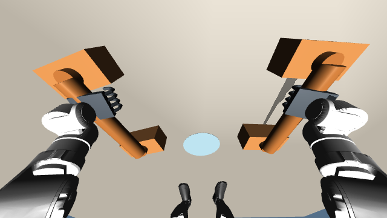
左、右手接触力：105.7 / 82.6 N；左、右足接触力：59.4 / 82.2 N。机身坐标系线速度：(0.0115, 0.0010, 0.0045) m/s。
GPT 记录的判断：双手与双脚均已承重，身体速度约0.01m/s；执行八段连续IK下压，保持伸腿后的足端目标并加深屈肘。
下发动作：继续执行，窗口 8 s，速度比例 1.0，后端 legacy。
俯卧撑：深屈肘后推起
观测 39 · 127.060 s · pushup_raise
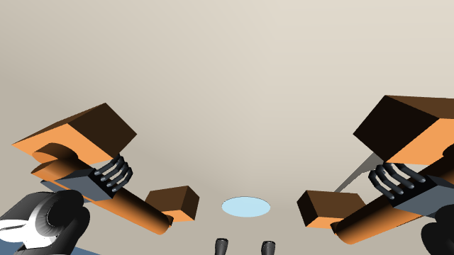
左、右手接触力：121.8 / 125.0 N；左、右足接触力：59.6 / 58.8 N。机身坐标系线速度：(-0.0087, -0.0087, -0.0158) m/s。
GPT 记录的判断：第一视角已下降接近支架，双手约122/125N、双脚约59N支撑；下压完成，沿连续参考逆序上推，随后等待稳定。
下发动作：继续执行，窗口 8 s，速度比例 1.0，后端 legacy。
撤手：确认夹爪张开
观测 46 · 136.772 s · withdraw_hands
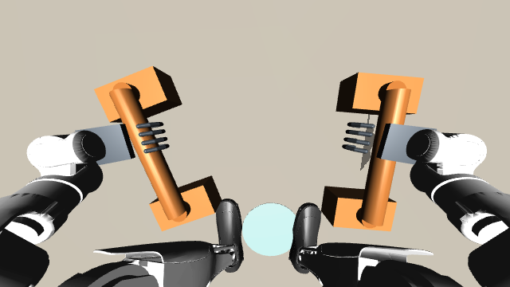
左、右手接触力：-0.9 / 0.0 N；左、右足接触力：202.0 / 143.8 N。机身坐标系线速度：(0.0002, 0.0009, 0.0001) m/s。
GPT 记录的判断：夹爪已张开、手部负载近零，支架留在台面；先抬手离杆，再保持双脚支撑站起。
下发动作：继续执行，窗口 8 s，速度比例 1.0，后端 legacy。
跳跃：批准摆臂与起跳
观测 49 · 147.676 s · jump
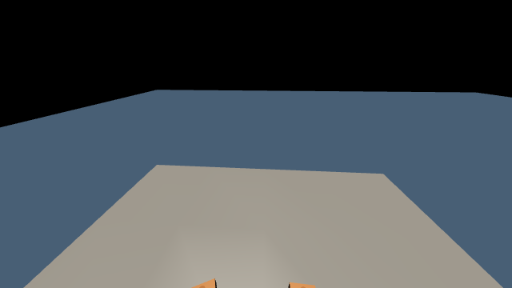
左、右手接触力：0.0 / 0.0 N；左、右足接触力：330.7 / 395.5 N。机身坐标系线速度：(0.0373, 0.0077, 0.0516) m/s。
GPT 记录的判断：身体竖直、双脚接触已建立、双手与支架分离；执行后摆臂屈膝蓄力、前摆臂起跳及落地恢复。
下发动作：继续执行，窗口 8 s，速度比例 1.0，后端 legacy。
落地：站稳定姿
观测 50 · 153.076 s · final_flex
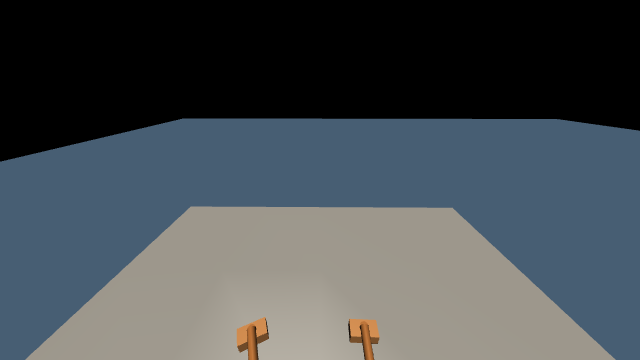
左、右手接触力：0.0 / 0.0 N；左、右足接触力：181.2 / 177.9 N。机身坐标系线速度：(-0.0013, -0.0017, -0.0013) m/s。
GPT 记录的判断：落地后身体已竖直且静止，双脚约181/178N稳定承重；执行最后一次秀肌肉并保持稳定定姿，完成表演。
下发动作：继续执行，窗口 8 s，速度比例 1.0，后端 legacy。
观测 3 批准支架前的小步精调，观测 11、12 和 15 将持架导航交给 SONIC。观测 35 保留了双手承担支撑而足部接触摘要为零的瞬间，落脚控制继续等待接触稳定。观测 38、39 分别对应俯卧撑下降与推起，观测 50 确认落地后的站立状态。各次判断均依据当前观测；严格动作质量由独立审计评估。
全部 51 次决策见原始决策日志，各次观测与动作可按编号追溯。
3. 运动执行
GPT 的输出作用于运动段的执行许可和参数。任务顺序由已有阶段程序辅助，GPT 尚未独立生成全部阶段或高频电机命令。
- 行走与转向：SONIC planner 根据移动方向、速度和朝向生成运动参考，encoder 与 decoder 输出腿部目标，用于登台、接近支架、提架转向及走向中心。中心转向采用 SONIC，支架前的最后接近采用带足端避让的低速步态。
- 拾取与放置：IK 根据手腕、握杆、足底及身体姿态约束生成运动参考，夹爪通过真实接触夹持支架。放置时保持夹持并等待底座稳定，再松手与撤手。
- 支撑转换与俯卧撑：复用已有全身参考、IK 与接触力控制。逐腿后伸和收回分别具有落脚稳定阶段，手足接触力和机身速度用于检查支撑条件。
- 跳跃与定姿：已有摆臂、屈膝、伸腿和落地控制器产生关节目标；落地后的双足接触与身体速度满足稳定条件后进入最终定姿。
- 电机执行：关节位置与速度误差经 PD、必要的支撑补偿及力矩限幅转换为执行器输入。夹爪保留独立位置控制与驱动力限幅。
控制入口为 online_hybrid.py，搬运和波比跳分别调用 refine_stage_transport.py 与 continue_stage_performance.py。参考轨迹用于运动目标生成，实际机器人状态始终由动力学积分推进。
4. 动力学与时钟
物理积分步长为 0.0001 s。搬运控制以 0.002 s 为一步，波比跳控制以 0.004 s 为一步；GPT 的决策频率由阶段转换及执行窗口决定。模型等待期间暂停物理积分，系统属于在线暂停步进闭环，尚未验证墙钟实时控制。
搬运从全新场景初态执行。搬运和波比跳通过完整 mjSTATE_INTEGRATION 状态衔接，逐元素验证关节位置、速度、执行器及求解器状态一致，仅重置局部时间原点。本轮动力学状态衔接最大误差为 0，场景模型完全一致。
决策日志中的等待时间包含模型推理、工具调用与开发等待，不能作为纯模型推理延迟。仿真视频按物理时间播放，省略决策期间物理未推进的墙钟等待。
5. 实验结果
实验 codex_sonic_revision_005 从初态完成四阶段连续执行，共 159.672 s、51 次 Codex 在线决策，其中 6 次选择 SONIC。运输段全部既定检查通过，在线序列审计和积分状态边界等同性检查通过。跳跃记录到至少 0.100 s 双脚腾空，双足共同离台间隙最大约 2.16 cm，最终定姿与稳定性检查通过。
5.1 行走与接近质量
使用保存的 50 Hz 物理状态计算 torso_link 横滚 RMS，统计包括加减速与停步，接近段包含 approach_fine。第一视角相机固定于躯干，未添加视频防抖。各版本为当前场景中的单次轨迹，路径与持续时间不同。
| 阶段 | v2 横滚 RMS | v3 原运行 | v3 本轮运行 | 本轮时长 |
|---|---|---|---|---|
| 登台接近支架（含小步精调） | 6.34° | 2.96° | 4.20° | 17.94 s |
| 提架转身与走向中心 | 5.87° | 2.79° | 3.54° | 9.66 s |
| 中心转向与对齐 | 6.17° | 6.85° | 3.70° | 4.84 s |
v2 基准为 codex_full_001，v3 原运行为 codex_sonic_003。本轮三段横滚 RMS 均低于 v2；接近与持架导航的横滚仍高于 v3 原运行，小步精调仍存在可见摇摆。完整指标见躯干稳定性审计。
拾取前每 2 ms 检查一次足部与支架的法向接触力，以 0.01 N 为检测阈值，本轮接触控制周期数为 0；50 Hz 保存状态的几何审计同样未检测到足部与支架相交。检测范围为当前运行的采样状态。控制周期接触记录 · 几何接触审计。
5.2 俯卧撑屈肘
下表采用物理轨迹中的肩—肘—腕几何夹角，180° 表示伸直，角度越小表示屈肘越深。
| 运行 | 左肘最低角度 | 右肘最低角度 |
|---|---|---|
| v2 | 110.1° | 113.5° |
| v3 原运行 | 154.3° | 152.2° |
| v3 本轮运行 | 110.1° | 109.2° |
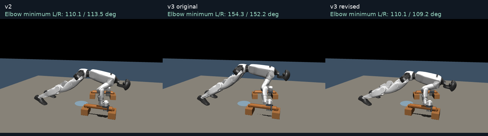
5.3 物理与动作质量
完整阶段执行和严格物理质量分别报告。运输检查全部通过；波比跳严格物理检查及部分运动质量检查未通过，阈值保持原值。
| 指标 | 本轮实测 | 既定判据 |
|---|---|---|
| 支架最大位移 | 6.73 cm | ≤ 3 cm，未通过 |
| 累计自接触 | 4 ms | ≤ 10 ms，通过 |
| 最大关节速度 | 限制的 1.064 倍 | ≤ 1 倍，未通过 |
| 逐腿横向偏移 | 右腿收回 8.13 cm，其余三次 ≤ 5 cm | 每次 ≤ 5 cm，未全部通过 |
| 俯卧撑顶部伸臂 | 左 / 右肘 163.3° / 160.3° | 双肘均 > 165°，未通过 |
| 双手夹持几何有效比例 | 56.2% | ≥ 90%，未通过 |
深屈肘已达到与 v2 相近的幅度，顶部伸臂判据仍未满足，因此整体俯卧撑质量检查为 false。四次逐腿运动均记录到位移、离地与落地，最终跳跃和定姿通过运动检查。
在线审计 · 运行结果 · 运输检查 · 波比跳物理检查 · 动作质量审计。
6. SONIC 导航与操作协同
本系统使用 NVIDIA 发布的 SONIC kinematic planner、encoder 与 decoder，将目标导航、学习型运动跟踪和任务 IK 分层组合。官方模型通过 ONNX Runtime 执行，保持配套的关节映射、默认角度、动作缩放与 PD 增益。
6.1 导航与运动参考
任务程序提供导航目标；根据当前位置计算世界坐标系中的移动方向、目标速度和朝向，并通过速度反馈补偿实际速度偏差。planner 每 0.4 s 更新一次，平移使用 slowWalk 模式，停止与原地转向使用 idle 模式。输入包含四帧 36 维 G1 位姿，每帧由基座位置、四元数与 29 个身体关节角组成。
planner 输出 30 Hz 参考，关节角采用线性插值，基座四元数采用 SLERP，参考更新处设置 0.16 s 过渡。首次上下文取当前实测位姿，后续上下文取上一参考轨迹的采样，以保持参考连续性。
6.2 学习型跟踪与任务上肢控制
encoder 将 1762 维参考输入编码为 64 维 motion token；decoder 将 token 与十帧本体感知历史组合为 994 维输入，输出 29 维身体关节动作。网络每 20 ms 推理一次，对应仿真时间的 50 Hz。本轮记录 1324 次策略推理与 68 次 planner 更新，详见执行记录。
实际驱动采用 SONIC 输出中的 12 个腿部关节目标。腰部、双臂和两只夹爪继续使用任务 IK、PD 与负载补偿；任务上肢参考也覆盖 planner 对应分量，支持握架期间的姿态保持。该组合未经额外训练，本实验验证范围限于当前场景与轨迹。
6.3 小步接近与控制切换
SONIC 用于 stage_entry、approach、turn_center、carry_center 和 turn_front。支架前的 approach_fine、拾放、逐腿伸收、俯卧撑与跳跃采用任务控制器。
- 预留停步距离。接近支架时 SONIC 目标世界坐标 x 为 2.42 m。进入 0.06 m 邻域后采用零速度 idle 参考，双足接触力均超过 80 N、身体速度低于 0.035 m/s 且偏航角速度低于 0.12 rad/s，持续 0.6 s 后切换到精调。
- 低速足端避让。精调以双足平均位置 (2.68, 0.90) m 为目标，前向速度上限 0.08 m/s、横向速度上限 0.04 m/s。摆动足 IK 约束足外缘与支架底座的间距，单次横向目标修正不超过 25 mm。该数值为避让修正上限，实际步长由步态与 IK 共同决定。
- 连续参考交接。切换时清除步态网络的循环状态、动作历史和速度积分，停步后以 2 s 混合过渡到静态参考。中心转向保持 SONIC 控制；策略边界刷新当前运动学与接触观测，随后 IK 保留实际落脚位置。物理位置、速度和积分状态始终连续。
6.4 支架放置
放置时保留实际足部位置，手臂参考以 2 s 混合接入。支架到达台面附近后保持当前水平落点，每 0.1 s 的高度修正限制为每轴 0.5 mm，倾角修正限制为每轴 0.003 rad。四个底座接触力均超过 0.706 N、支架速度低于 0.03 m/s 且身体速度低于 0.05 m/s，持续 0.4 s 后打开夹爪。夹持依赖 MuJoCo 真实接触，无焊接约束或外力搬运；关节力矩限制保持不变。
6.5 俯卧撑连续 IK
逐腿后伸参考与俯卧撑参考需要具有一致的足趾位置。SONIC 搬运后的支架与足部布局会改变 IK 边界条件；屈肘轨迹采用已有伸腿参考末端实际达到的足趾位置作为约束，以保持支撑几何连续。
- 将下降目标分成八个递进 IK 求解点，每次使用上一解初始化下一次求解。
- 基座高度目标从 0.49 m 递进到 0.38 m，肘部几何角目标从 170° 递进到 112°，同时保留手部与足趾约束。
- 下降和推起参考各持续 1.5 s，推起沿下降参考反向执行，并保留原有接触稳定判据。逐腿收回、松手、起身和跳跃继续使用已有运动控制。
上述高度与角度是 IK 目标，实际动作质量由物理轨迹测量；底部屈肘幅度与顶部伸臂程度分别检查。
模型与接口来源：官方 GR00T-WholeBodyControl、GEAR-SONIC 模型、planner ONNX 接口。本实验的 50 Hz 为仿真时间控制频率，完整系统尚未验证墙钟实时运行。
7. 记录与可视化
每次在线决策保存第一视角图像、观测 JSON、动作及理由；全过程保存关节状态、速度、控制输入、接触指标和阶段事件。在线审计检查编号、来源、观测文件及状态连续性，运动审计进一步检查逐腿运动、曲臂幅度、跳跃腾空和最终稳定性。
首页左侧展示第三人称视角，可切换运镜衔接和固定全景；右侧展示连续第一人称视角。两个视频来自同一轮实际轨迹，以 15 fps、848 × 480 分辨率渲染，使用相同时间轴同步播放、暂停、跳转及倍速。连续第一视角视频用于展示，GPT 实际读取的是逐次保存的 640 × 360 原始观测。渲染调整相机与天空外观，未替换物理状态或插入片段交叉淡化。
视频复用同配置校准运行的渲染缓存；复用前对场景、轨迹数组与积分状态完成 18 项逐元素等同性检查，均与本轮在线运行完全一致。51 组原始观测和决策取自本轮 Codex 会话，渲染帧未用于模型决策。渲染等同性审计与渲染来源保留缓存来源和验证记录。